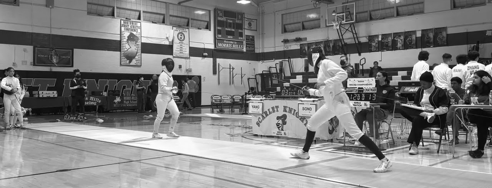

School Fencing Season Starts Nov. 30
Three weapons, 27 bouts, one team score: what Elite FC families should know before New Jersey’s 2026–27 high school season.

A high school dual meet at Morris Hills High School, home of the state team finals.
New Jersey high school fencing is a team sport first, which can surprise club families used to fencing for themselves. It also covers all three weapons, so your epeeist will have foil and sabre teammates.
The dual meet. A school team has three squads (sabre, foil and epee), and each sends three starters to the strip. Each starter fences all three opposing starters, so a meet runs 27 bouts, nine per weapon. Bouts go to five touches or three minutes, the length of a pool bout. Each win is one point for the school. The first team to 14 clinches, but all 27 are fenced, and coaches can send in subs.
How it differs. A USA Fencing tournament is individual: pools of five-touch bouts, then a single-elimination bracket of 15-touch bouts. A dual meet has no bracket. Every bout counts the same, so one epee bout can swing a night. Both 2026 state finals ended 14-13.
The calendar. NJSIAA, the state’s school sports body, runs the season under NCAA rules. For 2026–27, optional tryouts are Nov. 23–25, first practice is Nov. 30 and meets may start Dec. 7. Teams can fence up to 16 regular-season contests.
The big days. Mid-January brings the Santelli Tournament (girls) and Cetrulo Tournament (boys) at Drew University in Madison. The state’s high school coaches association runs both, and USA Fencing calls them the largest and oldest high school team tournaments in the world. Squads place in each weapon, and the lowest combined total wins. They carry prestige but are not state titles. Chatham’s girls have won the last four Santellis. Morris County holds its own tournament in late January; in 2026 Chatham’s boys won it for a seventh straight year and its girls for a fifth.
The NJSIAA team tournament starts Feb. 9, 2027. The top 16 teams by power points in the North and South brackets qualify, and higher seeds host until the North and South champions meet Feb. 25 at Morris Hills High School. Last winter Bergen Tech won the boys title and Columbia the girls.
Individual states are Feb. 27 at Hunterdon Central. Under last season’s rules, the top 36 fencers per weapon in dual-meet rankings on the Touch By Touch app qualify; district qualifiers were dropped in 2025–26. A team or individual state title is the summit.
For club fencers. Last season, state-tournament eligibility required fencing in at least half of a team’s meets, a rule NJSIAA says it is revising. NJSIAA also denies petitions from fencers who skip a state championship for a national, regional or other outside event. Check February against your USA Fencing calendar early. Can club epeeists flèche? See sidebar.
Follow along at NJ.com’s high school fencing pages and njsiaa.org.
| Fencer | Finish (Epee) |
|---|---|
| Mila Siu | 3rd, Y12 Women |
| Penny Young | 6th, Y12 Women |
| Stella Kuo | Top 16, Y14 Women |
Super Youth Circuit, Rochester, N.Y., Oct. 2–4. Podium photo, page two.
| When | What (2026–27) |
|---|---|
| Nov. 23–25 | Optional tryouts |
| Nov. 30 | First practice |
| Dec. 7 | Meets may begin |
| Mid-Jan. | Santelli, Cetrulo (Drew) |
| Feb. 9–23 | State team rounds |
| Feb. 25 | Team finals, Morris Hills |
| Feb. 27 | Individual states |
2027 Santelli (girls) and Cetrulo (boys) dates are not out yet; 2026’s were Jan. 17–18.
School Rules Let the Flèche Fly
A flèche (French for “arrow”) is an aggressive attack in which the fencer’s back foot swings past the front one, like an exaggerated stride. For years, New Jersey high schoolers couldn’t use it. NJSIAA’s 2014–15 fencing guidelines said it flatly: “NO fleching is permitted.”
Coaches pushed back. A 2016–17 trial rule let foil and epee fencers cross their feet once per action, and the state coaches association argued it over at its spring and fall 2017 meetings. Safety in cramped gyms was the worry; one coach said a flèche had hit a coach standing beside the strip at a state tournament. By fall the coaches’ summary was simple: running attacks out, garden-variety flèche fine.
The limit has since left the books. NJSIAA’s 2021–22 rules kept old items like three-minute bouts but listed no flèche restriction. Current rules say NCAA rules govern, and no NJSIAA changes are posted. NCAA uses USA Fencing’s rulebook, which allows the flèche in epee and foil but penalizes crashing into an opponent; sabre bans crossing the feet forward at all.
The 2026–27 rules aren’t out yet, so check with your coach before you let one fly.